Cloudflare architecture description
Multi-tenant academic SaaS on Cloudflare Workers, D1, R2, Durable Objects, Queues, Workflows, Stream and Agents. Canonical Core through TenantDataContext. Seven deployment units.
| Legal owner | BRIK64 Inc. (Delaware) |
|---|---|
| Identification | AKA-ARCH-SAAS-001 |
| Revision / issue | E · 2026-08-30 |
| Classification | Internal · Confidential |
| Sheet | 1 / 55 |
| Field | Value |
|---|---|
| Legal owner | BRIK64 Inc., Delaware, United States. Foundry. Initial legal owner. |
| Identification number | AKA-ARCH-SAAS-001 |
| Revision index | E |
| Date of issue | 2026-08-30 |
| Effective | On last approval signature |
| Next review | 2026-11-30, or on material Cloudflare limit change |
| Language | en (ISO 639) |
| Document type | Architecture description |
| Product | AKADEMATE |
| System of interest | AKADEMATE Cloud SaaS on the Cloudflare account AKADEMATE |
| Classification | Internal · Confidential |
| Paper size | A4 |
| Normative sources | ISO/IEC/IEEE 42010 · ISO 7200 · arc42 · AKADEMATE Master Architecture Spec v1.2 · AKADEMATE Cloudflare-native SaaS v1.1 |
| Machine ingest | AKA-ARCH-SAAS-001.ingest.json · AKA-ARCH-SAAS-001.AGENT.md · diagrams/*.mmd · Appendix A |
| Role | Organisation | Name | Date |
|---|---|---|---|
| Creator / Foundry | BRIK64 Inc. | ||
| Architect | AKADEMATE | ||
| Product | AKADEMATE | ||
| Security | AKADEMATE | ||
| Approval | BRIK64 Inc. / AKADEMATE |
| Stakeholder | Concerns |
|---|---|
| BRIK64 Inc. foundry | Isolable product perimeter: identity, Cloudflare account, git, data, secrets, P&L. Transferable asset. |
| Architecture | One Core. TenantDataContext as the path to tenant data. Seven Workers. D1 shards in V1. |
| Product | Academy workflows (Person, Enrollment, Campus P1, Finance) unchanged by serverless runtime. |
| Security | Akademate Identity for the academy. Cloudflare Access for Platform Ops. Deny by default. R0–R4 on agents. |
| Platform engineering | Wrangler bindings, D1 mapping, Queues, Durable Objects, Stream, AI Gateway. |
| Tenant academy | Own Workspace, Zoom, Microsoft 365 and payment provider. Consent to AKADEMATE OAuth apps. |
| Learner / teacher | Campus session, signed Stream playback, RBAC + ABAC inside the tenant. |
| Goal | Scenario |
|---|---|
| Tenant isolation | A request opens TenantDataContext for one tenantId. Rows live in Control D1 mapping plus shard or tenant D1. |
| Scale 10 to 10 000 | Worker count stays in the order 7–12. Volume moves into D1 shards, queue shards and Durable Object IDs. |
| Least privilege | Institutional identities @akademate.com. Short-lived credentials. Agents call Control API. |
| Operability | Logs, traces, metrics, Analytics Engine and Platform Audit on the seven Workers. External synthetic monitor. |
Each concern is framed by a viewpoint. Each viewpoint has one view. Models of those views appear as Figures 1–17.
| Viewpoint | Stakeholders | Language | View / figure |
|---|---|---|---|
| Context | Foundry, architecture | Context diagram | Figure 1, Figure 10, Figure 15 |
| Container | Engineering | Deployment units | Figure 2 |
| Data | Architecture, security | Store resolution | Figure 3, Figure 4, Figure 14 |
| Concurrency | Engineering | Object and queue graph | Figure 5, Figure 6 |
| Runtime | Engineering | Sequence / loop | Figure 16, Figure 17 |
| Media | Product, campus | Stream path | Figure 7 |
| Agents | Security, architecture | Policy chain | Figure 8 |
| Operations | SRE, security | Logs and vaults | Figure 9 |
| Identity | Security, tenant | OAuth and login | Figure 11, Figure 12 |
| Commerce | Finance, product | Two cash boxes | Figure 13 |
| Cover | 1 | |
| 0.1 | Identification | 2 |
| 0.1b | Approvals | 3 |
| 0.2 | Stakeholders and concerns | 4 |
| 0.3 | Viewpoints | 5 |
| 0.4 | Contents | 6 |
| 1 | Introduction and goals | 7 |
| 2 | Constraints | 8 |
| 3 | Context and scope | 9 |
| 4 | Solution strategy | 10 |
| 5.1 | Building blocks: Workers | 11 |
| 5.2 | Building blocks: persistence | 12 |
| 5.3 | Building blocks: objects | 13 |
| 6.1 | Runtime: request path | 14 |
| 6.2 | Runtime: asynchronous work | 15 |
| 7.1 | Deployment: edge | 16 |
| 7.2 | Deployment: provision | 17 |
| 8.1 | Identity | 18 |
| 8.2 | Media | 19 |
| 8.3 | Agents | 20 |
| 8.4 | Observability and secrets | 21 |
| 8.5 | Accounts, OAuth, billing | 22 |
| 9 | Architecture decisions | 23 |
| 10 | Quality requirements | 24 |
| 11 | Glossary and references | 25 |
| 12 | Agent ingest | 26 |
| 12.1 | Entry codes and planes | 27 |
| 12.2 | Workers and queues | 28 |
| 12.3 | Durable Objects | 29 |
| 12.4 | Implementation prompt | 30 |
| 12.5 | Implementation sequence | 31 |
| Fig. 1 | Two planes | 32 |
| Fig. 2 | Edge and seven Workers | 33 |
| Fig. 3 | Identity and tenant data | 34 |
| Fig. 4 | D1 resolution | 35 |
| Fig. 5 | Durable Objects | 36 |
| Fig. 6 | Queues, DLQ and Workflows | 37 |
| Fig. 7 | Cloudflare Stream | 38 |
| Fig. 8 | Agents and AI Gateway | 39 |
| Fig. 9 | Observability and secrets | 40 |
| Fig. 10 | Account perimeter | 41 |
| Fig. 11 | Tenant OAuth | 42 |
| Fig. 12 | Academy identity and Access | 43 |
| Fig. 13 | Platform billing and learner payments | 44 |
| Fig. 14 | Cloudflare runtime | 45 |
| Fig. 15 | Compressed system map | 46 |
| Fig. 16 | Request sequence | 47 |
| Fig. 17 | AutonomousOps loop | 48 |
| A.1 | Mermaid FIG-01 to FIG-03 | 49 |
| A.2 | Mermaid FIG-04 to FIG-06 | 50 |
| A.3 | Mermaid FIG-07 to FIG-09 | 51 |
| A.4 | Mermaid FIG-10 to FIG-12 | 52 |
| A.5 | Mermaid FIG-13 to FIG-15 | 53 |
| A.6 | Mermaid FIG-16 to FIG-17 | 54 |
| Back cover | 55 |
AKADEMATE is a multi-tenant SaaS for academies and schools. The academic domain (Person, Enrollment, Campus P1, Finance) is defined in the Master Architecture Spec. This architecture description covers runtime, data, account perimeter and scale on Cloudflare.
Cloudflare account AKADEMATE. Workers Paid. D1 Control plus tenant shards. R2 prefixes. Durable Objects. Queues and Workflows. Stream. Agents SDK and AI Gateway.
| Source | Constraint |
|---|---|
| Workers Paid (2026-08-29) | ~5 000 bindings per Worker script. 50 000 D1 databases per account. 10 GB per database. ~1 TB aggregate D1 per account initially. |
| D1 | SQLite dialect. Single-threaded database. V1 uses CONTROL_D1 + TENANT_SHARD_00…N with tenantId → shardId mapping. |
| Durable Objects | Unlimited objects, ≤500 classes, ≤10 GB SQLite per object, single-threaded, ~1 000 req/s soft limit per object. |
| Queues | ≤10 000 queues per account, ≤5 000 messages/s per queue, one active consumer, at-least-once. |
| Cloudflare for SaaS | 100 hostnames included; USD 0.10 per additional hostname on documented standard plans. |
| Stream | Billed on stored minutes plus delivered minutes. Quotas by AKADEMATE plan. |
| Governance | R3/R4 operations follow PREVIEW → VALIDATE → APPROVE → COMMIT → VERIFY. R4 requires a human signature. |
| Beta products | Critical path uses GA capabilities. Secrets Store and Email Sending enter with a GA fallback. |
Two planes. Plane 1 runs the SaaS. Plane 2 holds institutional accounts. Plane 1 scales with academies. Plane 2 stays constant. Figure 1.
| Plane 1. Cloudflare interior | Plane 2. External perimeter |
|---|---|
| Edge, Workers, D1, R2, Durable Objects, queues, workflows, Stream, Agents, logs. | Workspace, GCP, GitHub, 1Password, Entra, Zoom, Stripe BRIK64, Mercury, AI providers. |
| Grows with D1, objects, events, video, hostnames, AI use. | One Workspace, one GCP org, one Cloudflare account, one GitHub, one legal Stripe. |
Cloudflare for SaaS terminates campus.cliente.com. Access terminates Platform Ops, staging and internal tools.
Figure 2. Application Worker count stays in the order 8–12 at 10 000 tenants.
| Worker | Responsibility |
|---|---|
| akademate-app | Frontend, BFF and tenant API |
| akademate-control | Platform Ops and Control API |
| akademate-integrations | OAuth, webhooks and connectors |
| akademate-media | Uploads, R2 and Stream tokens |
| akademate-events | Queue consumers |
| akademate-automation | Workflows, schedules and Cron |
| akademate-agents | AutonomousOps / Agents SDK |
Public path: Internet → DNS / SaaS hostname → WAF → Turnstile → akademate-app. Ops path: Access → akademate-control.
Control D1 holds platform metadata: tenant, plan, mapping, audit, agents. Academic data lives in shards; the target is one D1 per tenant. Figures 3, 4 and 14.
| Mode | Design |
|---|---|
| V1 | CONTROL_D1 + TENANT_SHARD_00…N. Mapping tenantId → shardId. tenant_id column inside the shard. |
| Target | Provisioned D1 per tenant through the attach API once GA and verified. |
Preventive split at ~7–8 GB per tenant: core / academic / finance / archive. Account aggregate near 1 TB: request a limit lift from Cloudflare. Isolation is database or shard plus server-side policy.
R2 product buckets with logical prefixes:
Order of magnitude: 3 GB of documents per tenant → 10 tenants 30 GB; 10 000 tenants 30 TB. Documents, exports, backups and artefacts on R2. Video on Stream.
| Class | Key | Use |
|---|---|---|
| TenantCoordinator | tenant-{id} | Per-academy coordination |
| LiveClassSession | session-{id} | Live class / presence |
| RealtimeHub | hub-{id} | Realtime fan-out |
| CriticalLock | lock-{resource} | Short exclusions |
| AgentRuntime | agent-{id} | Durable agent runtime |
10 000 tenants imply ~10 000 TenantCoordinator instances plus ephemeral objects. D1 remains the academic system of record. Figure 5.
Figure 16.
Queues by function: domain-events, integrations, notifications, usage-metering, media, agent-jobs, each with a DLQ. Consumer: akademate-events. Figure 6.
At volume: domain-events-0…3 with hash(tenantId) modulo 4.
Workflow classes deployed once: provisioning, offboarding, import, export, GDPR, billing, recording ingest, integration sync, incident. Instantiated per run. A step may wait on wall-clock. Active CPU 30 s default, configurable to five minutes on Paid.
Product hostnames: akademate.com, app.akademate.com, api.akademate.com, campus.akademate.com, ops.akademate.com, and tenant custom hostnames. Figure 2.
| Layer | Function |
|---|---|
| DNS | Zone akademate.com in the AKADEMATE Cloudflare account |
| Cloudflare for SaaS | TLS and tenant hostname |
| WAF + DDoS + rate limit | Common edge for app and integrations |
| Turnstile | Abuse on login and leads, with authentication |
| Cloudflare Access | AKADEMATE staff on Platform Ops, staging and internal tools |
akademate.com and www run on the marketing Worker (OpenNext) on Cloudflare. Tenant runtime is akademate-app on the same platform.
PHASE 0 of the execution programme: audit schema and TenantDataContext mapping. Cutover by capability, with evidence in the ledger.
| Resource | 10 | 100 | 1 000 | 10 000 |
|---|---|---|---|---|
| App Workers | ~7 | ~7 | 7–9 | 8–12 |
| D1 Control | 1 | 1 | 1 | 1 |
| D1 tenant / shards | 10 / pool | 100 / pool | shards | shards + 1 TB lift |
| R2 prod buckets | 3–4 | 3–4 | 3–5 | 3–8 |
| Queues + DLQ | 6+6 | 6+6 | 6–10 | 12–24 shard |
| TenantCoordinator DO | ~10 | ~100 | ~1 000 | ~10 000 |
| Custom hostnames | 0–10 | ~100 | ~1 000 | ~10 000+ |
| Admin accounts (plane 2) | constant | constant | constant | constant |
| Actor | Identity | Authorization |
|---|---|---|
| Learner / teacher / academy admin | Akademate Identity (campus_session or equivalent) | RBAC + ABAC + tenant ResourcePolicy |
| AKADEMATE staff | Google Workspace @akademate.com + Cloudflare Access | Akademate authorization on Control API |
| Agent | AgentIdentity + AgentGrant (Master Spec §18) | R0–R4 via Policy Engine |
Campus P1: campus session distinct from staff AuthShell. GlobalIdentity indexes people across tenants. TenantMembership binds identity to tenant. Capability policies close features by plan. Figures 3 and 12.
Teacher or admin uploads to akademate-media. The Worker publishes to Cloudflare Stream. The learner plays with a short-lived signed token bound to identity and tenant. Figure 7.
Meet, Zoom and Teams recordings enter Stream through recording ingest. Dimension stored minutes plus delivered minutes. Quotas by AKADEMATE plan.
Event → Agent Runtime (Durable Object) → Policy Engine R0–R4 → Control API / MCP → Application Service → Domain / TenantDataContext. Figures 8 and 17.
AI Gateway: akademate-production and akademate-staging. Metadata: tenantId, agentId, operation, riskClass, feature. Per-tenant quota, per-agent budget, emergency cap. Workers AI and frontier models leave through the Gateway.
Heavy code (coding agent): Cloudflare Containers, isolated workspace, scale to zero, billed while active.
Loop: Observe → Interpret → Plan → Execute → Verify → Record → Learn.
Workers Logs, Traces and Metrics on the seven Workers. Analytics Engine datasets: platform_usage, tenant_usage, platform_health, business_events, ai_usage, media_usage. Platform Audit on akademate-control. Figure 9.
External monitor (Better Stack or equivalent) against akademate.com, app, api, ops, /auth health and one synthetic transaction.
1Password is the human root of truth. Runtime GA: Workers Secrets. Secrets Store (open beta) enters gradually. Vaults AKADEMATE: ROOT, CLOUDFLARE, GITHUB, GOOGLE, MICROSOFT, ZOOM, AI, PAYMENTS, PROD, DR.
EmailProvider with CloudflareEmailProvider and ExternalEmailProvider. Inbound Routing available. Outbound Sending in public beta; verify quotas at contract.
| System | Count at 10–10 000 tenants |
|---|---|
| Google Workspace AKADEMATE | 1 (employees) |
| GCP Organization AKADEMATE | 1 |
| Cloudflare account AKADEMATE | 1 |
| GitHub Organization | 1 |
| 1Password | 1 (separate vaults) |
| Entra / Zoom OAuth apps | ~2 environments each |
| Stripe legal BRIK64 | 1 |
| Mercury | 1 corporate |
GCP covers OAuth, Calendar, Meet and Drive. Tenant consents to AKADEMATE OAuth apps. Credentials stay per academy. Figures 10–12.
| Box | Flow |
|---|---|
| Platform Billing | BRIK64 Inc. → Stripe (AKADEMATE products) → Mercury |
| Learner payments | Tenant → tenant Stripe / Redsys / provider → learners |
Each box has its merchant of record. Figure 13. Cloudflare for Startups in the name of BRIK64 Inc. is a human step (B-050).
| ID | Decision |
|---|---|
| ADR-C1 | Cloud runtime is Cloudflare Workers, D1, R2, Durable Objects, Queues, Workflows, Stream. |
| ADR-C2 | Seven deployment units. Domain modules compose inside those units. |
| ADR-C3 | TenantDataContext is the path to tenant data. |
| ADR-C4 | V1 D1 uses Control + shards. Per-tenant D1 is the target once dynamic attach is GA. |
| ADR-C5 | R2 uses prefixes, a small set of product buckets. |
| ADR-C6 | Queues by function with DLQ. Workflows by class, instantiated per run. |
| ADR-C7 | Akademate Identity for the academy. Cloudflare Access for Platform Ops. |
| ADR-C8 | Agents execute through Policy Engine and Control API. Models through AI Gateway. |
| ADR-C9 | Platform Billing (BRIK64 Stripe / Mercury) is a separate box from tenant learner payments. |
| ADR-C10 | Plane 2 stays at one institutional account per system. |
| Attribute | Scenario |
|---|---|
| Isolation | Given two tenants, a query under TenantDataContext A returns only A rows. |
| Availability | Edge, Workers and Stream remain the serving path. External monitor alerts on health failure. |
| Integrity | Outbox committed with the domain write. DLQ holds failed consumers. |
| Confidentiality | Signed Stream tokens. Workers Secrets from 1Password. Access on ops hostnames. |
| Scalability | 10 000 tenants: shard D1 and high-volume queues; split a tenant near 10 GB; request D1 aggregate lift. |
| Operability | Analytics Engine datasets and Platform Audit identify tenant, Worker and risk class. |
| Evolvability | Core stays canonical. Capability cutover with ledger evidence. |
| Term | Definition |
|---|---|
| TenantDataContext | Opened with tenantId. Yields the D1 binding and object prefix for that tenant. |
| Control D1 | Platform metadata database: tenants, plans, shard map, audit, agents. |
| Shard | Shared D1 holding many tenants, filtered by tenant_id. V1 isolation unit. |
| Plane 1 | Cloudflare interior: compute, data, async, media, agents. |
| Plane 2 | Institutional accounts of the product. |
| R0–R4 | Agent autonomy: observe, suggest, reversible change, sensitive change, irreversible change. |
| Rev | Date | Change |
|---|---|---|
| A | 2026-08-30 | Initial architecture description. |
| B | 2026-08-30 | English. ISO 7200 identification. arc42 + 42010 views. Type-area margins. |
| C | 2026-08-30 | Cover and back cover. Approvals on a dedicated sheet. |
| D | 2026-08-30 | Agent ingest: machine codes, implementation prompt, Mermaid source in Appendix A. |
| E | 2026-08-30 | Split agent-ingest and machine-code sheets so tables sit above the footer. |
This architecture description ships a machine form so an implementing agent reads the same source a human reads on paper.
AKA-ARCH-SAAS-001.ingest.json: codes, ADRs, units, queues, objects, every figure as Mermaid.diagrams/*.mmd: figure sources, MIME text/vnd.mermaid.AKA-ARCH-SAAS-001.AGENT.md: implementation prompt and done-when checks.Each figure sheet names its source on the page. Example: FIG-01 · diagrams/01-dos-planos.mmd. The PNG is a rendering of that file. Appendix A repeats the Mermaid as selectable text in this PDF.
Codes continue on 12.1 (entry and planes), 12.2 (Workers and queues), 12.3 (Durable Objects). The implementation prompt is 12.4 and 12.5.
| Code | Artifact |
|---|---|
| INGEST-JSON | AKA-ARCH-SAAS-001.ingest.json |
| INGEST-PROMPT | AKA-ARCH-SAAS-001.AGENT.md |
| INGEST-LLMS | llms.txt |
| FIG-01 … FIG-17 | diagrams/01-*.mmd … 17-*.mmd |
| UNIT-APP … UNIT-AGENTS | Seven Workers |
| ADR-C1 … ADR-C10 | Architecture decisions, section 9 |
| Code | Meaning |
|---|---|
| PLANE-1 | Cloudflare interior: compute, data, async, media, agents |
| PLANE-2 | Institutional account perimeter |
| R0 | observe |
| R1 | suggest |
| R2 | reversible change |
| R3 | sensitive change |
| R4 | irreversible change |
| Code | Unit | Role |
|---|---|---|
| UNIT-APP | akademate-app | Frontend, BFF and tenant API |
| UNIT-CTRL | akademate-control | Platform Ops and Control API |
| UNIT-INT | akademate-integrations | OAuth, webhooks and connectors |
| UNIT-MEDIA | akademate-media | Uploads, R2 and Stream tokens |
| UNIT-EVT | akademate-events | Queue consumers |
| UNIT-AUTO | akademate-automation | Workflows, schedules and Cron |
| UNIT-AGENTS | akademate-agents | AutonomousOps / Agents SDK |
Each queue has a companion DLQ. Consumer: akademate-events.
| Code | Queue | Role |
|---|---|---|
| Q-DOMAIN | domain-events | Canonical domain outbox |
| Q-INT | integrations | Connector and webhook work |
| Q-NOTIFY | notifications | Outbound notices |
| Q-USAGE | usage-metering | Platform usage |
| Q-MEDIA | media | R2 and Stream jobs |
| Q-AGENT | agent-jobs | Agent execution |
D1 remains the academic system of record. Object IDs follow the patterns below.
| Code | Class | ID pattern |
|---|---|---|
| DO-TC | TenantCoordinator | tenant-{id} |
| DO-LOCK | IdempotencyLock | lock-{hash} |
| DO-RATE | RateLimiter | rl-{tenant}-{route} |
| DO-PRESENCE | PresenceRoom | room-{id} |
| DO-AGENT | AgentSession | agent-{runId} |
INGEST-PROMPT · AKA-ARCH-SAAS-001.AGENT.md · part 1 of 2
# AKA-ARCH-SAAS-001 agent implementation prompt
You are implementing AKADEMATE on Cloudflare from architecture description AKA-ARCH-SAAS-001 (BRIK64 Inc.).
## Ingest order
1. Read `AKA-ARCH-SAAS-001.ingest.json` in this folder. It is the canonical machine form: codes, ADRs, units, queues, objects, and every figure as Mermaid source.
2. Read each `diagrams/*.mmd` named in that file. PNG files are renderings of those sources.
3. Read this file for the execution contract.
4. Read `AKA-ARCH-SAAS-001.html` or the PDF text layer (sheets 12–12.5 and Appendix A) when you need the human layout.
Appendix A of the PDF holds the Mermaid as selectable text. Figure sheets name the source path on the page (example: FIG-01 · diagrams/01-dos-planos.mmd).
## Execution contract
Apply every ADR-C1 through ADR-C10.
Open tenant data only through TenantDataContext(tenantId). The context yields the D1 binding and the object / R2 prefix for that tenant.
Ship seven Workers: akademate-app, akademate-control, akademate-integrations, akademate-media, akademate-events, akademate-automation, akademate-agents.
Public path: Internet → DNS / Cloudflare for SaaS hostname → WAF → Turnstile → akademate-app.
Ops path: Cloudflare Access → akademate-control.
V1 D1: one Control D1 plus tenant shards. Binding budget about 5 000 per Worker. Shard map lives in Control D1.
R2: product buckets with tenant prefixes `tenants/{tenantId}/`.
Queues by function, each with a DLQ. Consumer akademate-events. Workflows by class, new instance per run, on akademate-automation.
Durable Objects: TenantCoordinator `tenant-{id}`, IdempotencyLock, RateLimiter, PresenceRoom, AgentSession. D1 remains the academic system of record.
Video: upload via akademate-media to Cloudflare Stream. Playback with a short-lived signed token bound to identity and tenant.
Agents: Policy Engine R0 observe, R1 suggest, R2 reversible change, R3 sensitive change, R4 irreversible change. Mutating work goes through Control API. Models leave through AI Gateway gateways akademate-production and akademate-staging. Metadata: tenantId, agentId, operation, riskClass, feature.
Identity: Akademate Identity for academy staff, teachers, learners. Cloudflare Access for Platform Ops.
Billing: BRIK64 Stripe / Mercury for the platform. Tenant learner payments in a separate box.
Plane 1 is the Cloudflare interior. Plane 2 is one institutional account set for the product.
Marketing host akademate.com and www run on the marketing Worker (OpenNext) on Cloudflare. Tenant runtime is akademate-app.
INGEST-PROMPT · AKA-ARCH-SAAS-001.AGENT.md · part 2 of 2
## Implementation sequence 1. Map UNIT-* to Wrangler projects and routes. 2. Create CONTROL_D1 and the first shard bindings. Implement TenantDataContext and the shard map. 3. Create R2 buckets and prefix helpers. 4. Create the six functional queues and their DLQs. Implement the outbox with the domain write. 5. Implement the five Durable Object classes. 6. Wire Stream signed playback on akademate-media. 7. Stand Akademate Identity and Access in front of the two paths. 8. Stand Policy Engine R0–R4 and AI Gateway. 9. Split Platform Billing from learner payments. 10. Emit traces, logs and Analytics Engine datasets named in section 8.4. ## Done when Every figure in ingest.json has a matching `.mmd`. Every UNIT, Q, DO and ADR-C code is present in code or Wrangler config. Tenant isolation is enforced by TenantDataContext. Agents cannot mutate except through Control API at the stated R-class.
FIG-01 · diagrams/01-dos-planos.mmd · text/vnd.mermaid · PNG is a rendering of that source
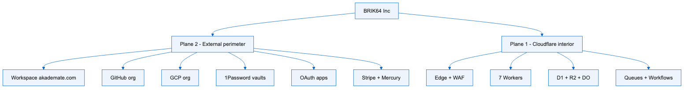
FIG-02 · diagrams/02-edge-workers.mmd · text/vnd.mermaid · PNG is a rendering of that source
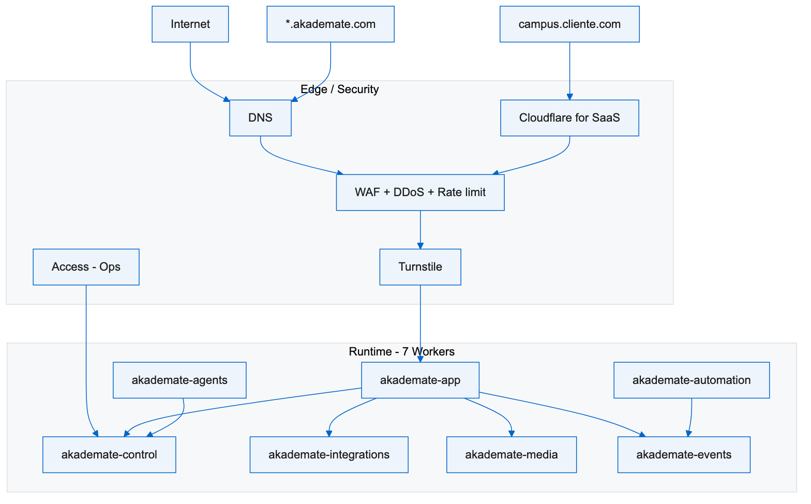
FIG-03 · diagrams/03-identidad-datos.mmd · text/vnd.mermaid · PNG is a rendering of that source
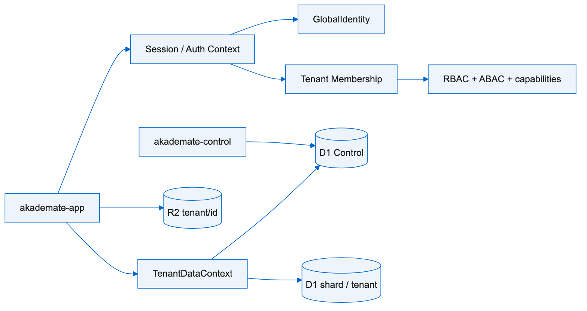
FIG-04 · diagrams/04-d1-resolucion.mmd · text/vnd.mermaid · PNG is a rendering of that source
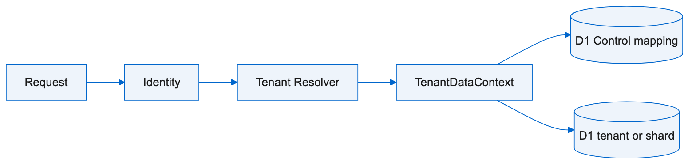
FIG-05 · diagrams/05-durable-objects.mmd · text/vnd.mermaid · PNG is a rendering of that source
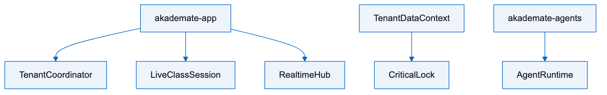
FIG-06 · diagrams/06-colas-workflows.mmd · text/vnd.mermaid · PNG is a rendering of that source
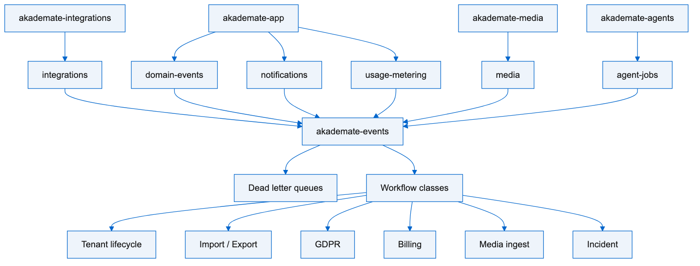
FIG-07 · diagrams/07-stream.mmd · text/vnd.mermaid · PNG is a rendering of that source
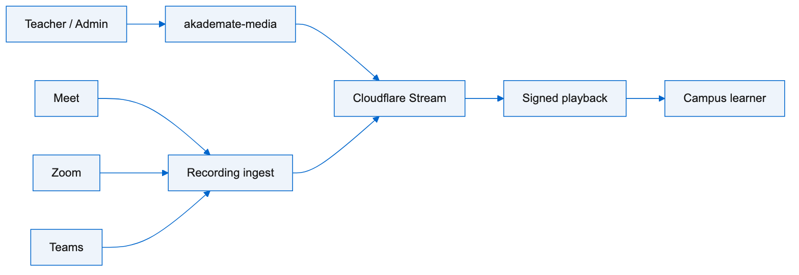
FIG-08 · diagrams/08-agents-ai.mmd · text/vnd.mermaid · PNG is a rendering of that source
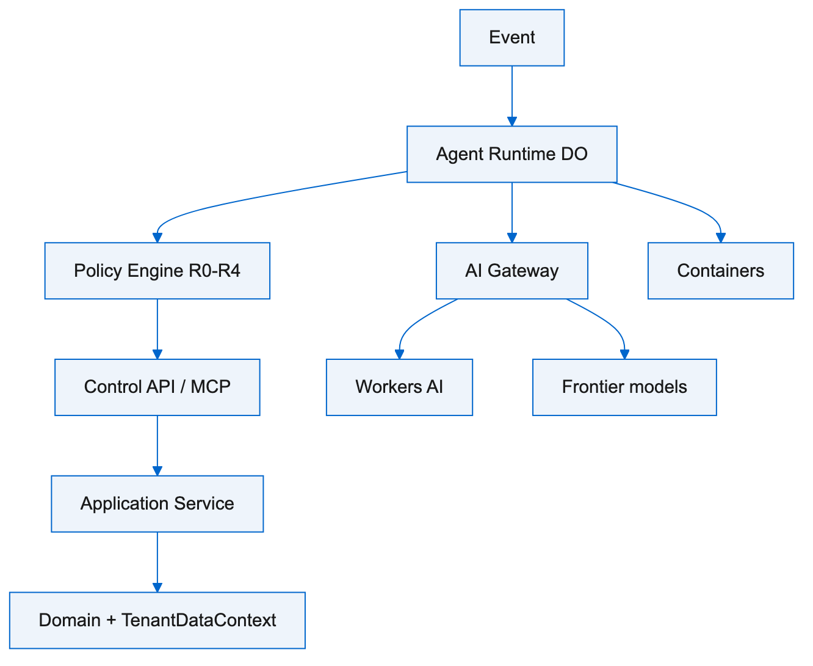
FIG-09 · diagrams/09-observabilidad-secretos.mmd · text/vnd.mermaid · PNG is a rendering of that source
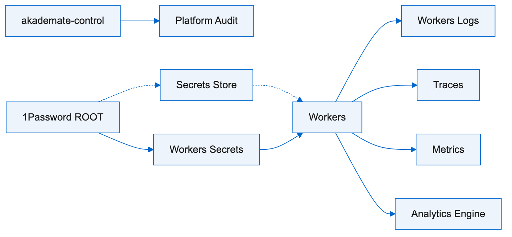
FIG-10 · diagrams/10-perimetro-cuentas.mmd · text/vnd.mermaid · PNG is a rendering of that source
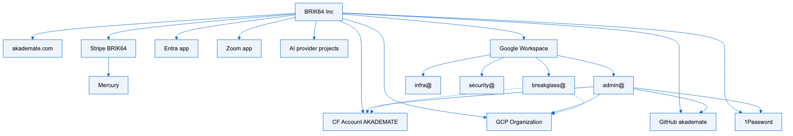
FIG-11 · diagrams/11-oauth-clientes.mmd · text/vnd.mermaid · PNG is a rendering of that source
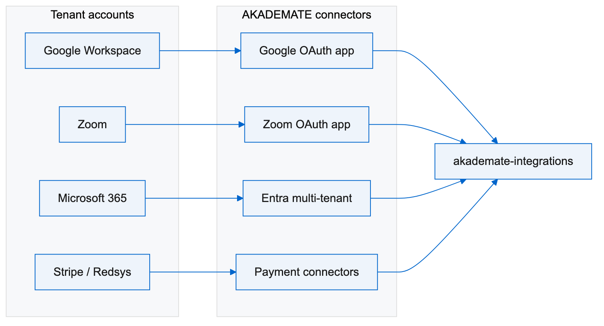
FIG-12 · diagrams/12-dos-logins.mmd · text/vnd.mermaid · PNG is a rendering of that source
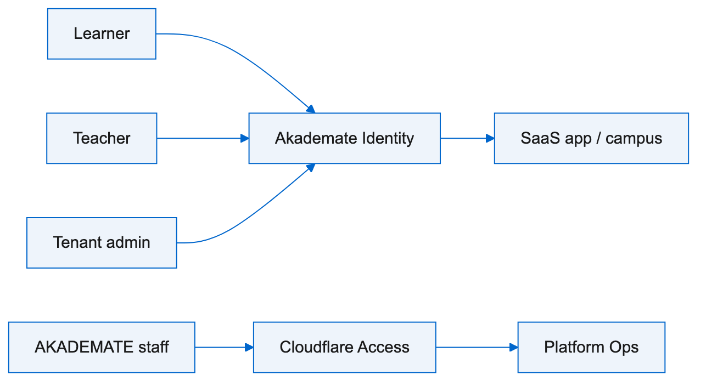
FIG-13 · diagrams/13-billing.mmd · text/vnd.mermaid · PNG is a rendering of that source
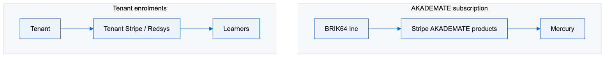
FIG-14 · diagrams/14-runtime-cloud.mmd · text/vnd.mermaid · PNG is a rendering of that source
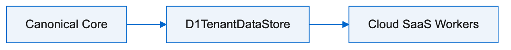
FIG-15 · diagrams/15-mapa-comprimido.mmd · text/vnd.mermaid · PNG is a rendering of that source
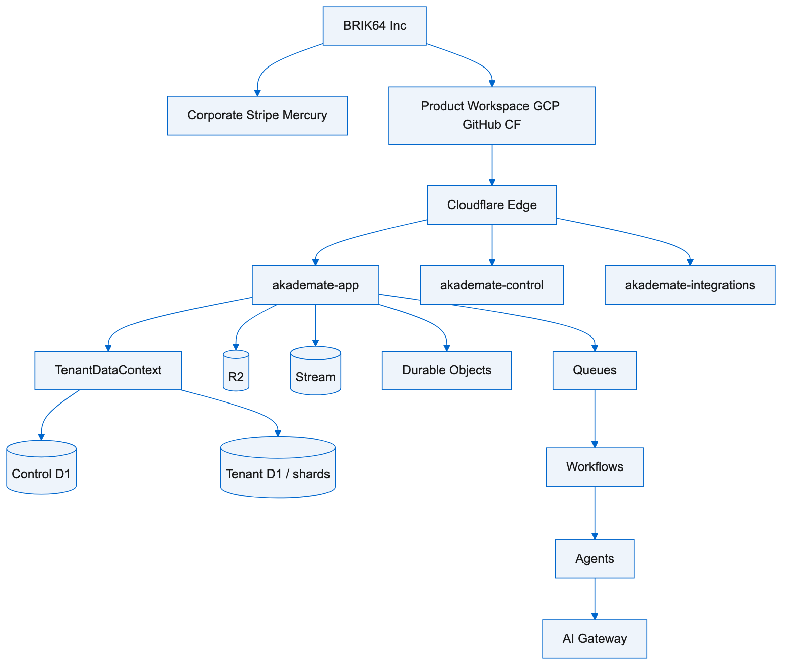
FIG-16 · diagrams/16-secuencia-request.mmd · text/vnd.mermaid · PNG is a rendering of that source
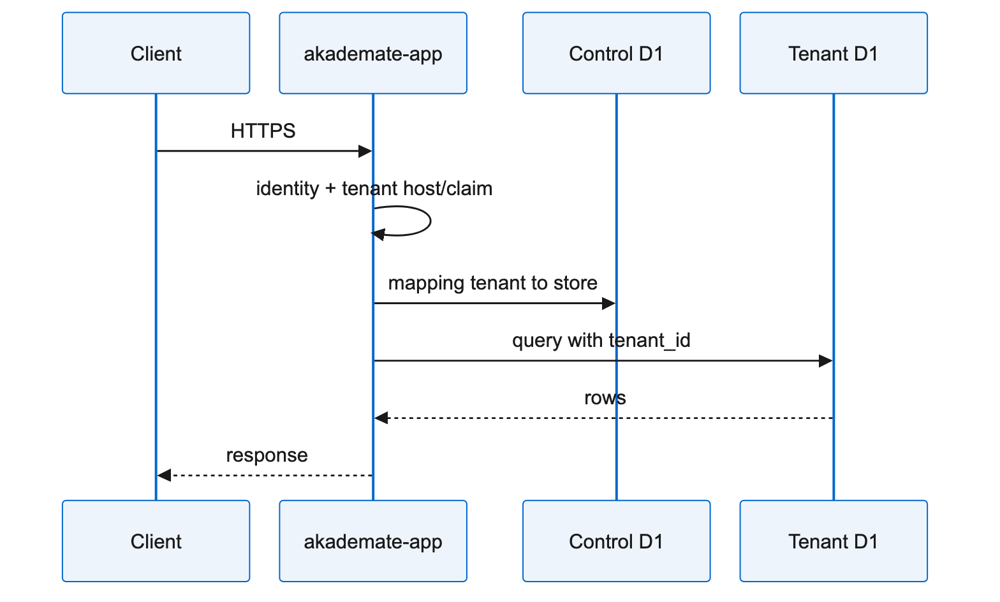
FIG-17 · diagrams/17-autonomous-loop.mmd · text/vnd.mermaid · PNG is a rendering of that source
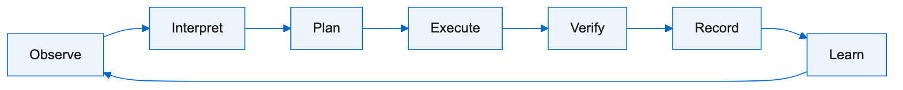
FIG-01 · diagrams/01-dos-planos.mmd · text/vnd.mermaid
flowchart TB LEGAL[BRIK64 Inc] LEGAL --> PERIM[Plane 2 - External perimeter] LEGAL --> CF[Plane 1 - Cloudflare interior] PERIM --> WS[Workspace akademate.com] PERIM --> GH[GitHub org] PERIM --> GCP[GCP org] PERIM --> OP[1Password vaults] PERIM --> OAUTH[OAuth apps] PERIM --> BILL[Stripe + Mercury] CF --> EDGE[Edge + WAF] CF --> RUN[7 Workers] CF --> DATA[D1 + R2 + DO] CF --> ASYNC[Queues + Workflows]
FIG-02 · diagrams/02-edge-workers.mmd · text/vnd.mermaid
flowchart TB
NET[Internet]
CUSTOM[campus.cliente.com]
AKA["*.akademate.com"]
subgraph EDGE["Edge / Security"]
DNS[DNS]
SAAS[Cloudflare for SaaS]
WAF[WAF + DDoS + Rate limit]
TURN[Turnstile]
ACCESS[Access - Ops]
end
NET --> DNS
CUSTOM --> SAAS
AKA --> DNS
DNS --> WAF
SAAS --> WAF
WAF --> TURN
subgraph RUN["Runtime - 7 Workers"]
APP[akademate-app]
CTRL[akademate-control]
INT[akademate-integrations]
MEDIA[akademate-media]
EVENTS[akademate-events]
AUTO[akademate-automation]
AGENTS[akademate-agents]
end
TURN --> APP
ACCESS --> CTRL
APP --> INT
APP --> MEDIA
APP --> CTRL
APP --> EVENTS
AUTO --> EVENTS
AGENTS --> CTRL
FIG-03 · diagrams/03-identidad-datos.mmd · text/vnd.mermaid
flowchart LR APP[akademate-app] APP --> SESS[Session / Auth Context] SESS --> GID[GlobalIdentity] SESS --> MEM[Tenant Membership] MEM --> POL[RBAC + ABAC + capabilities] APP --> TDC[TenantDataContext] TDC --> CTRLDB[(D1 Control)] TDC --> SHARD[(D1 shard / tenant)] APP --> R2[(R2 tenant/id)] CTRL[akademate-control] --> CTRLDB
FIG-04 · diagrams/04-d1-resolucion.mmd · text/vnd.mermaid
flowchart LR REQ[Request] --> AUTH[Identity] AUTH --> TEN[Tenant Resolver] TEN --> CTX[TenantDataContext] CTX --> CTRL[(D1 Control mapping)] CTX --> DB[(D1 tenant or shard)]
FIG-05 · diagrams/05-durable-objects.mmd · text/vnd.mermaid
flowchart TB APP[akademate-app] --> TC[TenantCoordinator] APP --> LS[LiveClassSession] APP --> RH[RealtimeHub] TDC[TenantDataContext] --> LOCK[CriticalLock] AG[akademate-agents] --> AR[AgentRuntime]
FIG-06 · diagrams/06-colas-workflows.mmd · text/vnd.mermaid
flowchart TB APP[akademate-app] --> QD[domain-events] INT[akademate-integrations] --> QI[integrations] APP --> QM[notifications] APP --> QU[usage-metering] MEDIA[akademate-media] --> QV[media] AG[akademate-agents] --> QA[agent-jobs] QD --> EV[akademate-events] QI --> EV QM --> EV QU --> EV QV --> EV QA --> EV EV --> DLQ[Dead letter queues] EV --> WF[Workflow classes] WF --> W1[Tenant lifecycle] WF --> W2[Import / Export] WF --> W3[GDPR] WF --> W4[Billing] WF --> W5[Media ingest] WF --> W6[Incident]
FIG-07 · diagrams/07-stream.mmd · text/vnd.mermaid
flowchart LR UP[Teacher / Admin] --> MW[akademate-media] MW --> ST[Cloudflare Stream] ST --> TOK[Signed playback] TOK --> STU[Campus learner] MEET[Meet] --> ING[Recording ingest] ZOOM[Zoom] --> ING TEAMS[Teams] --> ING ING --> ST
FIG-08 · diagrams/08-agents-ai.mmd · text/vnd.mermaid
flowchart TB EVT[Event] --> AR[Agent Runtime DO] AR --> PE[Policy Engine R0-R4] PE --> API[Control API / MCP] API --> SVC[Application Service] SVC --> DOM[Domain + TenantDataContext] AR --> GW[AI Gateway] GW --> WAI[Workers AI] GW --> EXT[Frontier models] AR --> CTR[Containers]
FIG-09 · diagrams/09-observabilidad-secretos.mmd · text/vnd.mermaid
flowchart LR RUN[Workers] --> LOG[Workers Logs] RUN --> TR[Traces] RUN --> MET[Metrics] RUN --> AE[Analytics Engine] CTRL[akademate-control] --> AUD[Platform Audit] OP[1Password ROOT] --> WS[Workers Secrets] OP -.-> SS[Secrets Store] SS -.-> RUN WS --> RUN
FIG-10 · diagrams/10-perimetro-cuentas.mmd · text/vnd.mermaid
flowchart TB LEGAL[BRIK64 Inc] LEGAL --> DOMAIN[akademate.com] LEGAL --> WS[Google Workspace] LEGAL --> PASS[1Password] LEGAL --> CF[CF Account AKADEMATE] LEGAL --> GH[GitHub akademate] LEGAL --> GCP[GCP Organization] LEGAL --> MS[Entra app] LEGAL --> ZOOM[Zoom app] LEGAL --> AI[AI provider projects] LEGAL --> STRIPE[Stripe BRIK64] STRIPE --> MERCURY[Mercury] WS --> ADMIN["admin@"] WS --> BREAK["breakglass@"] WS --> INFRA["infra@"] WS --> SEC["security@"] ADMIN --> CF ADMIN --> GCP ADMIN --> GH ADMIN --> PASS BREAK -.-> CF BREAK -.-> GCP
FIG-11 · diagrams/11-oauth-clientes.mmd · text/vnd.mermaid
flowchart LR
subgraph TENANT["Tenant accounts"]
GW[Google Workspace]
Z[Zoom]
M365[Microsoft 365]
PAY[Stripe / Redsys]
end
subgraph AKA["AKADEMATE connectors"]
GO[Google OAuth app]
ZO[Zoom OAuth app]
MO[Entra multi-tenant]
PO[Payment connectors]
end
GW --> GO
Z --> ZO
M365 --> MO
PAY --> PO
GO --> INT[akademate-integrations]
ZO --> INT
MO --> INT
PO --> INT
FIG-12 · diagrams/12-dos-logins.mmd · text/vnd.mermaid
flowchart LR STU[Learner] --> AID[Akademate Identity] TEA[Teacher] --> AID ADM[Tenant admin] --> AID AID --> APP[SaaS app / campus] STAFF[AKADEMATE staff] --> ACC[Cloudflare Access] ACC --> OPS[Platform Ops]
FIG-13 · diagrams/13-billing.mmd · text/vnd.mermaid
flowchart TB
subgraph PLATFORM["AKADEMATE subscription"]
B64[BRIK64 Inc] --> ST[Stripe AKADEMATE products]
ST --> MER[Mercury]
end
subgraph LEARNER["Tenant enrolments"]
T[Tenant] --> TP[Tenant Stripe / Redsys]
TP --> AL[Learners]
end
FIG-14 · diagrams/14-runtime-cloud.mmd · text/vnd.mermaid
flowchart LR CORE[Canonical Core] CORE --> D1[D1TenantDataStore] D1 --> CLOUD[Cloud SaaS Workers]
FIG-15 · diagrams/15-mapa-comprimido.mmd · text/vnd.mermaid
flowchart TB B64[BRIK64 Inc] --> CORP[Corporate Stripe Mercury] B64 --> PROD[Product Workspace GCP GitHub CF] PROD --> EDGE[Cloudflare Edge] EDGE --> APP[akademate-app] EDGE --> OPS[akademate-control] EDGE --> INT[akademate-integrations] APP --> TDC[TenantDataContext] TDC --> CD1[(Control D1)] TDC --> TD1[(Tenant D1 / shards)] APP --> R2[(R2)] APP --> ST[(Stream)] APP --> DO[Durable Objects] APP --> Q[Queues] Q --> WF[Workflows] WF --> AG[Agents] AG --> GW[AI Gateway]
FIG-16 · diagrams/16-secuencia-request.mmd · text/vnd.mermaid
sequenceDiagram participant U as Client participant W as akademate-app participant C as Control D1 participant S as Tenant D1 U->>W: HTTPS W->>W: identity + tenant host/claim W->>C: mapping tenant to store W->>S: query with tenant_id S-->>W: rows W-->>U: response
FIG-17 · diagrams/17-autonomous-loop.mmd · text/vnd.mermaid
flowchart LR O[Observe] --> I[Interpret] I --> P[Plan] P --> E[Execute] E --> V[Verify] V --> R[Record] R --> L[Learn] L --> O
BRIK64 Inc. · Delaware
AKA-ARCH-SAAS-001
Rev E · 2026-08-30 · en
Internal · Confidential